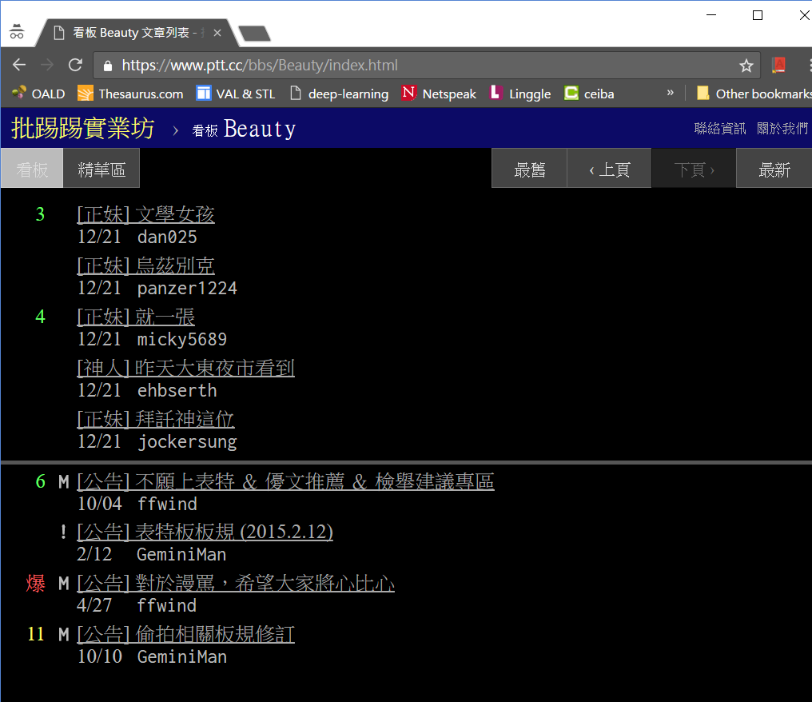

給初學者的 Python 網頁爬蟲與資料分析 (2) 套件安裝與啟動網頁爬蟲
PTT Beauty 板今日圖片下載器
PTT Beauty 板今日圖片下載器，會把表特板今天所有文章的圖片下載到本機端，同時儲存一些文章資訊。本系列文章藉由會實作這個範例，說明 Python 網頁爬蟲與資料分析的入門技巧。
套件安裝
首先請確定你的電腦已經安裝 Python 3 以及 pip (本文使用的環境是 Python 3.5.2 與 pip 9.0.1)
接著安裝所需套件，你可以依照 `requirement.txt` 中所列的套件一一安裝，也可以一次全部安裝
接著在命令列輸入以下指令，若沒有任何訊息出現則代表套件安裝成功
與網站 Server 溝通並取得網頁資料
PTT Web 版 Beauty 板首頁 https://www.ptt.cc/bbs/Beauty/index.html 在瀏覽器看起來是這樣的
要透過 Python 取得該頁資料，我們使用 requests 套件的 requests.get() 方法, 首先定義 get_web_page()函式
requests.get() 需要提供網址作為引數, 而 cookies={'over18': '1'} 是 PTT 網站有些板會詢問你是否已滿 18 歲, 因此將回答先存在 cookie 中一併傳給 server. requests.get() 的結果是 request.Response 物件, 我們可以先透過該物件的 statu_code 屬性取得 server 回覆的狀態碼 (例如 200 表示正常, 404 表示找不到網頁等), 若狀態碼為 200, 代表正常回應, 再透過 text屬性取得 server 回覆的網頁內容. 若狀態碼異常則回覆 None.
定義好 get_web_page() 函式之後, 就能呼叫它來取得網頁內容:
結果為
回傳的內容的確是瀏覽器所看到的內容，而且以第一篇貼文為例，我們可以看到它包含了推文數、文章連結、文章標題、貼文日期等我們所需要的資訊。下一篇文章會說明如何使用 BeautifulSoup 套件解構網頁內容，將資料取出。

“Happy coding.”
文章也同步刊登在 Jun-Wei Lin blogs